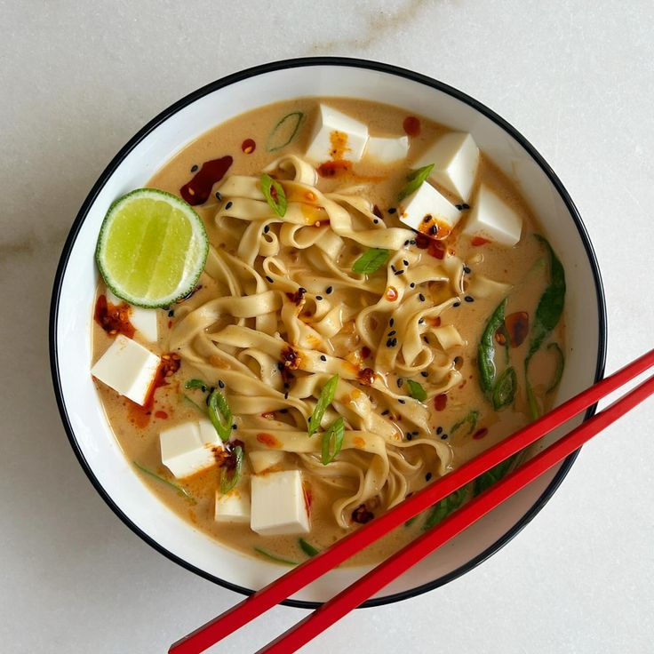

Visit home for more recipes
Noodle Soup

Description
Our version of miso noodle soup in a jar was
inspired by recipes on TikTok for miso soup
in a jar. Try this heat-and-eat recipe for a
warming main to prep and tote all season long.
Use jars labeled “microwave-safe” (check the bottoms)
and never microwave the lids.
Ingredients
- 12 ounces extra-firm tofu
- 1 tablespoon vegetable oil
- 1/4 cup sliced green onions
- 3 tablespoons white miso paste
- 2 cloves garlic, minced
- 1 tablespoon vegetable stock base
Steps
- Cut tofu into 1/2-inch planks.
Heat oil in a large skillet over
medium-high heat. Cook tofu, turning
halfway through, until golden, 6 to 8
minutes. Cut tofu into cubes.
- Stir together green onions, miso paste,
garlic, stock base, and ginger in a small bowl.
Divide evenly among 3 microwave-safe pint-size
canning jars with lids.
- Layer evenly with rice vermicelli noodles,
tofu, mushrooms, and bok choy. Chill, covered,
up to 5 days. To serve, see “Heat and Eat”.
Garnish with sliced green onions.